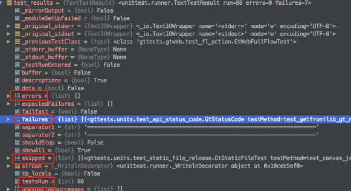
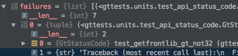
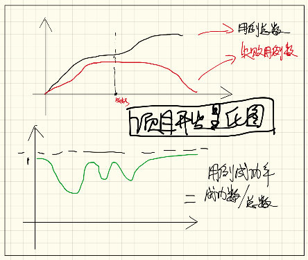

4. Xtest系统¶
4.1. 系统演示¶
形成稳定的产品测试线路图：

对测试记录生成 分享链接 ，供其他非登录用户直接进行访问：

http://xtest.apiapp.cc/utest-report-share.html?stoken=b40a587c362a11e7856f00163e006b26
被分享和传播的精美测试报告：

可以任意邮件或者QQ微信进行分享和传播，极大的提高了报告的 可读性和传播性。
系统试用 地址 ：
http://xtest.apiapp.cc/login.html
4.2. xtest系统接口¶
域名路径：
http://api.apiapp.cc/
这些系统接口可以直接封闭到sdk当中，目前提供了python版本的sdk的demo供大家参考。
4.2.1. 认证接口¶
功能：生成token以授权接口的调用
路径：
/testdata/api-auth/
传入参数：
- app_id
- app_key
请求方法：POST
返回值：
{
"code": 200,
"msg": "",
"data": {
"user": null,
"u_name": null,
"user_id": null,
"token": "7c45fc98391311e78e1a00163e006b26",
"ip": "113.57.119.51",
"user_agent": null,
"rc_time": "2017-05-15 10:09:11",
"c_type": 4,
"app_id": "3832f354872411e6a7c700163e006b26",
"last_use_time": "2017-05-15 07:22:54",
"finger_prt": null,
"c_name": "api",
"id": "59190dc747fc890ec5ba42e0",
"is_del": false,
"cookie": null,
"del_time": "2017-05-15 10:09:11"
}
}
其中最重要的是：
- token 后续进行接口调用的授权值
4.2.2. 数据接口¶
xtest系统提供了报告上行接口。
接口路径:
/testdata/create-test-data/
token认证: 需要，token放url里面
请求方式: POST
请求参数:
{
"pro_id": "57a835c8c6e905166da94243",
"pro_version":"1.3.4.5",
"run_time": 51.77724599838257,
"was_successful": false,
"total": 88,
"skipped": 7,
"errors": 0,
"failures": 10,
"details": [
{
"status": "failures",
"note": "AssertionError: 访问不合法,返回404",
"explain": "只是用于测试的Demo,没有太多意义",
"test_case": "test_nginx_config"
},
{},
{}
]
}
以上的请求参数分为两部分：
- 单元测试框架标准结果部分
- 自动化测试项目后期添加
其中：
- pro_id 项目在xtest系统中的id代号
- pro_version 被测对象的唯一版本号
- run_time 运行所有脚本花费的时间
属于自动化测试项目后期运算出来的数据，其它的则是标准的单元测试框架提供的测试结果中自带内容。
上传数据成功后的返回值:
{"code":200,"msg":"success","data":""}
4.3. 提取测试结果¶
本小节以 pyunit 单元测试框架为例子，来对测试报告所需要的内容进行提取。
4.3.1. 主要内容¶
TextTestResult 结果中包含的如下内容：
- errors 错误详细信息列表
- failures 运行失败详细信息列表
- skipped 跳过的详细信息列表
- testsRun 运行的用例总数
具体如下图所示：
4.3.2. 具体条目¶
以 failures 为例子：
本测试用例的描述：
编号 索引为0 的数据:
- _testMethodName 测试函数名称
- _testMethodDoc 测试函数的文档，这里面一般陈述本测试的功能
打印出来的堆栈错误信息：
- 编号 索引为1 的数据。
4.3.3. 提取方法¶
对测试结果进行内容提取，同时加入如下内容：
- 测试执行时间
- 项目ID
- 项目版本号
进行标准化格式打包。
代码：
def dict_encode_test_results(test_results, **kwargs):
"""
将测试结果进行json编码
:param test_results:
:type test_results: unittest.TestResult
:return:
"""
run_time = kwargs.get('run_time', None)
pro_id = kwargs.get('pro_id', None)
pro_version = kwargs.get('pro_version', None)
# 主体部分
res_dict = dict(
# was_successful=True if test_results.wasSuccessful() else False,
was_successful=test_results.wasSuccessful(),
total=test_results.testsRun,
failures=len(test_results.failures),
errors=len(test_results.errors),
skipped=len(test_results.skipped),
run_time=run_time,
pro_id=pro_id,
pro_version=pro_version
)
# 详细信息部分
failure_list = [] # 失败的内容
for x in test_results.failures:
note_data = {
'test_case': x[0]._testMethodName,
'explain': x[0]._testMethodDoc.rstrip('\n :return:'),
'status': 'failures',
'note': x[1]
}
failure_list.append(note_data)
for i in test_results.errors:
note_data = {
'test_case': i[0]._testMethodName,
'explain': i[0]._testMethodDoc.rstrip('\n :return:'),
'status': 'errors',
'note': i[1]
}
failure_list.append(note_data)
res_dict['details'] = failure_list
return res_dict
可以提到一个如下的字典对象：
test_res_dict = {
"pro_version": "1.16.10.10.1",
"pro_id": "57fa12ec47fc894ee04a2c69", # 在后台管理系统中组织信息详细信息里面可以查看到:项目ID
"run_time": 51.772,
"was_successful": False,
"skipped": 2,
"errors": 1,
"failures": 1,
"total": 5,
"details": [
{
"status": "failures",
"note": "AssertionError: 访问不合法,返回404",
"explain": "只是用于测试的Demo,没有太多意义",
"test_case": "test_nginx_config"
}
]
}
4.4. 对接xtest¶
主要步骤如下：
- 使用微信在首页扫码进行注册或者登录
- 【资产管理】-【项目信息】查看到 项目编号
- 查看 app_id 和 app_key
依据xtest系统提供的API进行接口调用，可将 判定测试 的结果上传到 测试报告系统服务器 数据库，即可生成 软件系统量化线路图 和 精美测试报表服务 。
4.5. 定位和展望¶
系统定位：
- 本系统定位为 自动化 判定测试报告系统
- 没有代码执行系统，需要自己去写测试代码本地执行
- 可以将执行系统放在Jenkins里面去自动构建触发你的执行代码，然后将测试结果显示到本系统中
- Jenkins只能显示构建的历史，然后本系统可以显示测试的历史，刚好可以成为一个补充
后续展望：
- 提供看板报表功能，将量化过程投影到公司电视墙上
- 自动化SAAS服务器再触发相应的webhook，回调到后续的系统（例如：自动化发布系统）
- 对接Jenkins等持续集成
关于xtest系统，目前还有些功能在完善中，完善后再对外开放，相当于测试界人员的福利吧。换句话来说：
目前本系统还不对外开放，我们公司自己先用好了再说 ^_^
4.6. 项目过程量化图¶
主要特点：
- 以测试用例的数目和失败数量来量化开发过程
- 最终失败用例数是趋向于0的
- 随着功能的增加，总的用例数原则上是一直在增长的
- 以用例成功率来衡量每个版本的发布节点